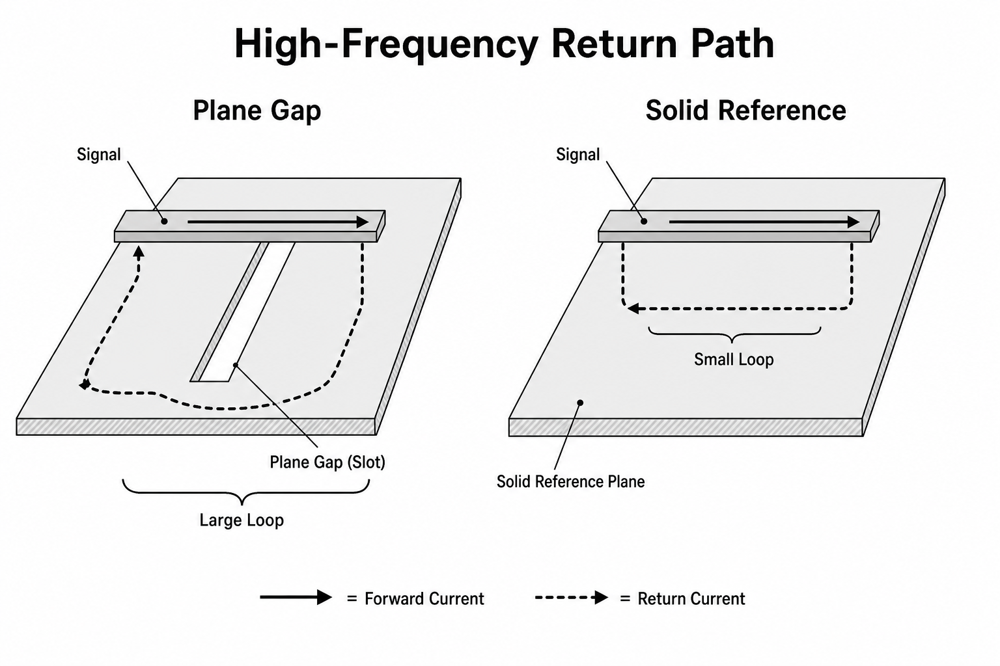
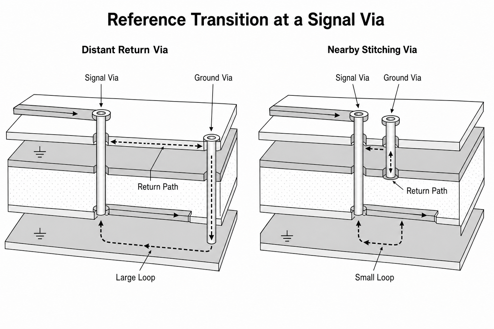

신호는 한 가닥을 따라 “가는” 것이 아니라 source에서 load로 나갔다가 reference conductor를 통해
돌아오는 닫힌 electromagnetic loop다.
DC에서는 return current가 주로 resistance가 낮은 넓은 경로로 퍼진다. frequency가 올라가면
loop inductance가 중요해져 signal trace 바로 아래 reference plane에 집중된다. 이것은
“고주파가 무조건 shortest path를 고른다”가 아니라 인접 conductors 사이 field energy를 최소화하는
낮은 impedance 분포의 결과다.
루프가 만드는 전압과 결합
VL = Lloop·di/dtreturn detour의 ground bounce
VC ≈ Cm·dv/dt·Zvictimcapacitive coupling 1차 감각
Φ = ∫B·dAloop 면적과 magnetic flux
Vind = −dΦ/dtinductive pickup
loop area가 커지면 외부 field를 더 많이 끌어안고 스스로도 더 잘 방사한다. high-speed signal이
plane split을 건너면 return current가 먼 bridge나 decoupling path로 우회해 loop가 커진다.
layer를 바꿀 때 signal via 근처에 reference stitching via를 두는 이유도 return의 층 전환
경로를 짧게 제공하기 위해서다.
LAB 09
연속 plane과 split plane
gap을 열고 닫으며 return current density와 loop area 변화를 비교한다.
상대 loop area 1.0×예상 결합 낮음
DRAW 09A
plane gap을 건넌 신호의 실제 귀환
귀환 전류는 빈 공간을 건너지 못하고, 도전성 경로를 찾아 slot 끝까지 우회한다.

“ground가 어딘가에 연결되어 있다”와 “고주파 귀환이 신호 바로 아래로 연속된다”는 다른 조건이다.
우회 길이는 loop L, magnetic pickup과 mode conversion을 동시에 키운다.
DRAW 09B
signal via 옆의 reference stitching
신호가 층을 바꾸면 귀환 전류도 기준면 사이를 넘어갈 수단이 필요하다.

같은 ground 계통의 두 면이라도 고주파에서는 연결 비아까지 가야 층을 바꿀 수 있다. stitching via를
signal via 가까이에 놓는 목적은 이름을 통일하는 것이 아니라 return-path inductance를 줄이는 것이다.
원리 더 깊게
귀환 전류는 “저항 최소”가 아니라 “임피던스 최소” 경로를 택한다
DC·저주파
도체 전체의 resistance가 지배하므로 전류밀도는 사용 가능한 넓은 면적으로 퍼진다. 여러
병렬 경로가 있으면 단면과 길이에 따라 분배되며, 이때는 “가장 짧은 한 선”으로만 흐르지 않는다.
edge의 고주파 성분
loop inductive reactance jωL가 커져 forward path 바로 아래에 귀환이 모인다. 이 배치는
두 전류의 magnetic flux를 상쇄하고 loop의 stored magnetic energy를 최소화한다.
plane gap
빈 slot에는 surface current가 흐를 수 없다. 귀환은 slot 끝, stitching capacitor 또는
다른 reference connection으로 우회하고, 그동안 커진 loop가 E/H coupling과 방사를 늘린다.
layer transition
GND→GND 면 전환에는 stitching via가, power→ground처럼 reference net가 바뀌는 전환에는
두 면을 고주파로 연결하는 근접 capacitor가 귀환의 displacement-current 경로를 제공한다.
“전류가 스스로 길을 안다”는 표현 대신 전체 field가 Maxwell 방정식과 경계조건을 만족하도록
재배치된다고 이해하자. layout 검토에서는 신호선을 손가락으로 따라가는 동시에 바로 아래
reference가 끊기지 않는지, via에서 return이 어떻게 층을 바꾸는지 표시한다.
손으로 푸는 예제 · 작은 inductance, 큰 di/dt
return detour가 추가 loop inductance 20 nH를 만들고 current edge가 0→0.5 A를 1 ns에 바꾼다면
di/dt = 5×108 A/s이고 V = L·di/dt = 10 V다. 실제 회로에서는 resistance, capacitance,
distributed effect가 peak를 제한하지만 “nH는 작으니 무시”할 수 없다는 크기 감각을 준다.
2 nH로 줄이면 같은 조건의 유도 전압은 1 V다.
상식 점검: 같은 current 변화에서 transition을 느리게 하거나 loop L을 줄이면 peak가 내려가야 한다.
배치와 배선에서
connector–protection–filter–receiver의 물리적 순서를 signal flow와 맞춘다. decoupling loop는
IC power pin–capacitor–ground pin 경로 전체를 짧고 넓게 만든다. crystal과 switch node처럼
dv/dt 또는 di/dt가 큰 작은 회로는 면적을 제한한다. analog/digital을 이름만으로 plane split하기
보다 실제 current path와 coupling mechanism을 먼저 그린다.
측정에서
두 ground 지점 사이를 scope로 재면 ground bounce와 probe loop pickup이 함께 보일 수 있다.
짧은 spring ground 또는 differential probe로 같은 지점을 재비교한다. current clamp와 near-field
H probe는 cable common-mode current와 큰 loop hotspot을 찾는 데 유용하다. board layout 캡처에
measurement point와 return path를 표시해 증거를 남긴다.
오개념 경보
“ground plane은 전압이 언제나 완전히 0인 무한 sink다.”
실제 plane에도 spreading resistance와 inductance가 있다. current가 흐르면 위치와 주파수에 따라
전위차가 생긴다. ground를 여러 이름으로 나누는 것보다 어떤 current가 어느 구역을 통과하는지,
연결점이 unwanted common impedance를 만드는지 분석하는 편이 본질적이다.
셀프 체크
고주파 return이 trace 아래 모이는 이유는?
인접 경로가 loop inductance와 field energy를 낮춰 주파수 의존 impedance가 작기 때문이다.
signal via 옆 reference via의 역할은?
layer transition 때 return current가 reference plane 사이를 가까이 이동하도록 경로를 제공한다.
plane split을 건너는 것이 위험한 이유는?
return이 gap을 바로 건너지 못해 우회하고 loop area, inductance, crosstalk와 radiation이 커질 수 있기 때문이다.